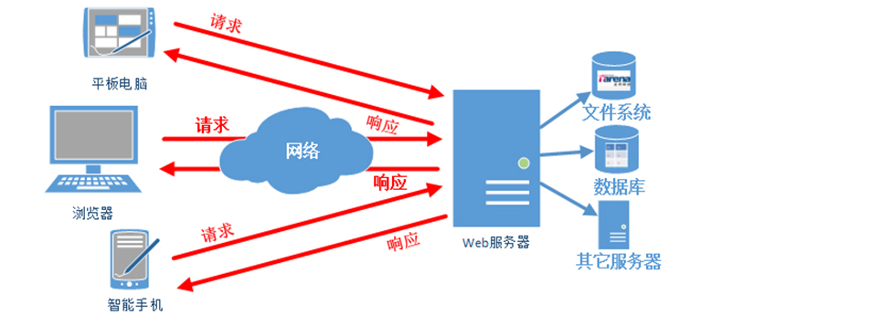
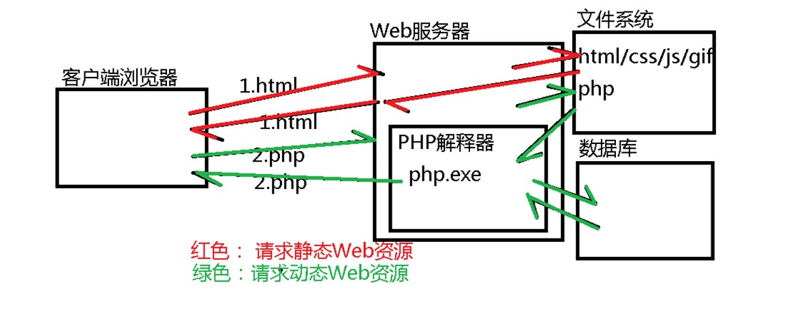
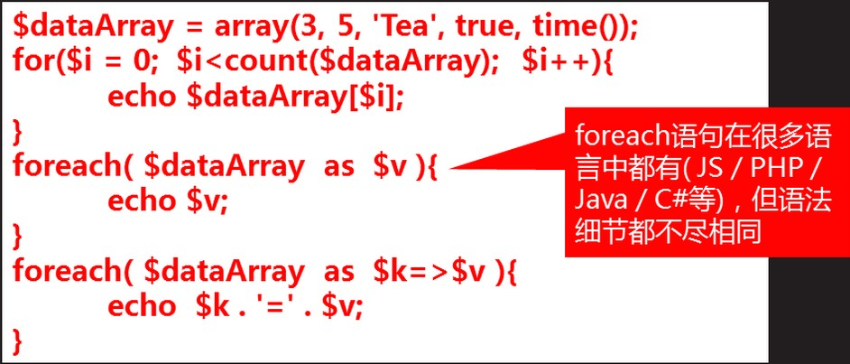

复习：
关系型数据库逻辑结构：
服务器 > 库 > 表 > 行 > 列
关系型数据库部署结构：
数据库服务器：存储数据
c:/xampp/mysql/bin/mysqld.exe
数据库客户端：向服务器发出操作指令
网页版本客户端：phpMyAdmin
命令行版本客户端： c:/xampp/mysql/bin/mysql.exe
如何使用客户端操作数据库服务器：
(1)启动服务器软件，保证其端口已经正常打开
(2)启动客户端软件，远程连接到服务器
C:\xampp\mysql\bin\mysql.exe -h127.0.0.1 -uroot -p -P3306
或者简写为： mysql -uroot
(3)使用客户端向服务器发出增删改查命令，获得服务器返回操作结果
1.复习：SQL语句的分类
(1)DDL：Data Definition Language，用于定义数据的结构
CREATE / DROP / ALTER / TRUNCATE
(2)DML：Data Manipulate Language，用于操作表中的记录行
INSERT / UPDATE / DELETE
(3)DQL：Data Query Language，用于查询数据
SELECT
(4)DCL：Data Control Language，用于操作用户的权限
GRANT / REVOKE
2.Web服务器

Web服务器的作用(面包小姐)：等待客户端的连接请求，解析请求内容(如：获取服务器上的某个网页/图片/CSS/JS等)，在服务器端的文件系统中找到客户端请求网页，发送给客户端。
Web服务器分为两类：
(1)静态Web服务器：只能向客户端提供一成不变的Web内容，如：
HTML / CSS / JS / GIF / SWF ....
(2)动态Web服务器：可以向不同的客户端在不同的时间提供不同的内容，如：
账户当前的余额 / 论坛中的帖子 / 新闻网的新闻 / 商城中的商品展示 ...
网页中的动态内容一般是保存在数据库/文件系统/其它服务器中的，必须使用某种后台编程语言来获取，常见的有：
1)JSP = HTML + Java 一般适用于大型项目
2)ASP.NET = HTML + C# 一般适用于Windows服务器上的项目
3)PHP = HTML + PHP 适用于中小型项目
4)NodeJS 适用于互联网&社区型项目.......

3.PHP语法
(1)数据类型
4种值类型： string boolean integer float
2种复合类型： object array PHP中不是Object，不能打印输出
2种特殊类型： NULL resource
(2)定义变量常量
定义变量：$变量名 = 值 ; //所有PHP变量都必须以$开头
定义常量：const 常量名＝值； define('常量名', 值)
(3)运算
算术运算： + - * / % ++ --
比较运算： > < >= <= ===
逻辑运算： && || !
三目运算： ?:
字符串拼接运算： .
(4)逻辑结构
选择： if...else.... switch..case...
循环： for($i=0; $i<num; $i++){ } foreach( ){ } while do..while...

(5)通用小程序
使用PHP输出九九乘法表
(6)模块的编写(函数/对象/类)
function add($a, $b){
$c = $a + $b;
return $c;
}
4.使用PHP向数据库服务器发送SQL指令
实现“添加新员工”功能点：
(1)创建一个empadd.html页面，用于收集用户的输入
<form action="empadd.php"></form>
(2)创建一个empadd.php页面，接收客户端提交的数据，拼接为SQL语句，提交给数据库服务器来执行，输出操作结果给用户